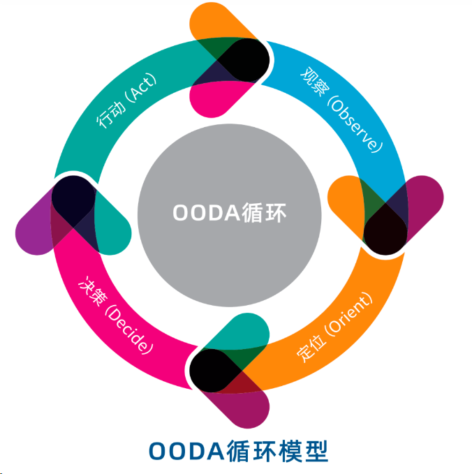

引发文章：
Operators, EDR Sensors, and OODA Loops - @Jackson_T
主旨：作为edr的操作或者后续人员，我们如何做决策；以及如何取得优势，在针对EDR取得的信息的时候。
OODA LOOPS
起源
OODA是观察（Observe）、调整（Orient）、决策（Decide）以及行动（Act）的英文缩写，它是信息战领域的一个概念。

OODA循环理论的基本观点是：武装冲突可以看作是敌对双方互相较量谁能更快更好地完成“观察—调整—决策—行动”的循环程序。双方都要从观察开始，观察自己、观察环境和敌人。基于观察，获取相关的外部信息，根据感知到的外部威胁，及时调整系统，做出应对决策，并采取相应行动。
“调整”步骤在整个OODA循环中最为关键，因为如果敌人对外界威胁判断有误，或者对于周围的环境理解错误，那么必将导致方向调整错误，最终做出错误决策。
包以德认为，敌、我的这一决策循环过程的速度显然有快慢之分。我方的目标应该是，率先完成一个OODA循环，然后迅速采取行动，干扰、延长、打断敌人的OODA循环。
OODA循环真正的秘诀在于“快”，撇开一切，瞬息进入快速观察，快速定位，快速决策，立即行动。在行动过程中，一旦出现新的情况，依然是快速观察，快速定位，快速决策，立即行动。要加快个人、团队或组织的决策速度，可以借鉴OODA循环来分析整个决策过程，发现哪些环节速度过快或过慢，从而有针对性地找到加速该决策循环过程的方法。
上述介绍引用自：OODA循环理论 - 知乎 (zhihu.com)
观察(Observe)
需要收集两类信息：
- 外部信息：通过感知设备或其他方式从环境中获取的原始数据
- 内部信息：基于过去经验而形成的知识、共识等
收集到的信息进行过滤、组织从而形成对环境的基础认知。
在网络防护过程中，这个阶段需要通过日志、IDS、防病毒等安全设备收集各种威胁信息，形成对攻击行为和漏洞的观察。
定向(Orient)
定向阶段是对观察信息进行分析、评估,形成对环境和对手的理解,为后续决策做准备。这需要利用过去的经验和现有知识体系,从不同角度分析观察信息,判断事件主要方面的因果关系、意图、影响等。
在网络安全中,这个阶段需要分析攻击行为、判断攻击意图,评估网络资产面临的风险水平,为应对决策做准备。可能需要关联分析和威胁情报,形成对整体威胁形势的理解。
决策(Decide)
在理解环境和对手后,决策者需要制定行动计划,判断在当前条件下最优的行动方案。这需要考虑各种行动选项的成本和收益,然后选择最佳方案。
网络安全决策需要根据威胁情报、资产价值等条件,决定是否需要应对,选择何种防御措施。需要评估应对行动的效果、代价,节省资源并降低业务中断。
行动(Act)
这一阶段是执行已决定的行动计划,将决策转化为具体操作。根据环境变化,行动的执行也可能是渐进的、可调整的。
在网络安全领域,这可能包括实施各类防御措施、攻击对手等。需要监控行动效果,根据环境变化调整应对手段。
来自演讲
总结，记录一些演讲中的内容
四种规避edr的路径
回避
避免直接操作安装了EDR产品的系统【我觉得这不太可能，现在国内公司连员工行为检测都上全了，还会有杀软关注不到的设备？】。许多公司在edr覆盖上存在问题，这一点在可能的情况下可以利用。
说白了就是利用edr的监控盲区。
滥用盲区
有时传感器不会收集或报告某些类型的事件。这可能只是配置问题，也可能是软件实现缺失。
规避常见危险行为，比如说不要直接用VirtualAlloc或者CreateRemoteThread之类的敏感函数。
伪装
核心就是白加黑的操作，利用白色程序掩盖自己的恶意行为。最后我们有监控设备篡改，我将其视为降低行为感知在这四个过程中的任何一个过程中的能力。
决策
我们在这里对所确定的选项进行审议，然后选择一种行动方案。在这个过程中，我们会考虑对我们重要的东西，并找出最能代表这些价值观的做法。
期间内容
报告的中间介绍了《Network Attacks & Exploitation: A Framework》这本书里提到的四个原则。
- 知识：对攻击对手信息的充分了解。
- 创新：根据实际情况更新攻击方法和攻击手段。
- 感知：绘制 AD 域图。通过挖掘内部维基来确定目标也有助于建立意识。
- 预防：尽量减少不可控行为的影响，可以通过增加冗余和多样化访问节点来实现。
以入侵一个服务器为例
从实战角度解释了ooda循环的对应步骤
一些名词
lsass
lsass.exe（Local Security Authority Subsystem Service进程空间中，存有着机器的域、本地用户名和密码等重要信息。如果获取本地高权限，用户便可以访问LSASS进程内存从而导出内部数据，用于横向移动和权限提升。
Observe
有来自 SharpHound 收集的数据，其中包括我们目标域中的计算机、群成员资格、活动会话等。此外，我们还在一个文件中发现了一个公用事业服务账户的凭据。当我们遍历整个环境时，可以发现我们遇到的大多数端点上都安装了 "Fancy EDR 2000 "产品，而 LSASS 缺乏保护。
- 收集了成员社交信息
- 登录凭证信息
- 安全防护信息
Orient
根据我们的 BloodHound 数据，有一条通往 "crownjewels "服务器的路径。但我们无法使用现有凭证直接验证 crownjewels 服务器。因此，我们可以转到一个跳转框，该跳转框中有一个可以验证目标服务器的账户的活动会话。
另一条路径涉及这个 "berthascott "用户。事实证明，我们所拥有的服务账户可以更改该用户的密码，这样我们就可以直接登录 crownjewels 服务器。
根据以往的一些经验，我们得知这款 Fancy EDR 2000 产品其实并不花哨。它擅长检测恶意命令行，但在其他方面并不擅长。因此，如果我们能设法不使用那些有容易签名的命令行的攻击指令，也许会有不错的效果。
最后，如果我们选择凭证转储路线，就可以尝试将我们所了解的 LSASS 转储技术映射到运行环境中。在PPT中，它们被分为由特定命令行或进程调用的技术，以及调用特定 Windows API 函数序列的技术。
Decide
根据上述信息，结合参与的人员队伍拟出了几条路线，最后根据情况选择了如下路线：
使用实用程序服务账户 RDP 进入跳转服务器，然后启动任务管理器并转储 LSASS，这样就能获得服务器账户的凭证或哈希值
Act
按照上述技巧战术进行攻击。
总结
上述过程其实是大多数的攻击中攻击者都会进行的这么一个过程，只不过是平时没有注意到而已，ooda不是什么新鲜的东西，大多数专业的攻击者都会潜移默化的遵循这个过程。
只不过是这个报告把上述过程从一种自发的行为，用ooda去解释了一下，更加的规范化体系化了而已。
显然如果核心是上面这些内容，那么是不会有组织同意他进行报告的，所以下面他又介绍了一个攻击战术：
OODA的对抗
OODA 互殴
edr本身也遵循ooda这个流程，而攻击行为也遵循这个行为，既然都遵守了ooda，那么攻击就可以按照 ooda的发明者提出的思想：
you have to operate “inside” their OODA loops.
这意味着要在循环的每个过程中理解 EDR 传感器,然后弄清楚如何在适当的地方规避每个过程。我的方法是粗略地从 CIA 三角的角度来看每个过程。
要以比EDR防御循环更快的速度运行你的进攻循环。尽管防御方面进步神速，但攻击者仍然基本上可以通过以更小、更敏捷的组进行运作来获得更大的灵活性。
本质上，你要做的是以一种方式改进操作员循环中的每个过程，这种方式使你能够比防御者做出更好、更快的选择。因此，这可能会为防御者带来模糊性、困惑和偶尔的麻痹，从而降低他们的响应能力。所以这是根据OODA模型“如何取胜”的非常高层概述。
这里主要翻译原文中的内容
观察
这涉及到信息的摄取，包括观察操作系统级别的事件，以及接受指向其不同组件的通信。当传感器决定在系统上执行某个操作时，它也可以观察到该交互过程中发生的事件。
这里列举的几个例子包括操作系统交互（如监控进程创建、文件写入、API 使用等）。还有签名和模型的更新，以及传感器配置和策略的更新。简略的使用上面的入侵例子为例，获得的信息是：
- 几个内核模式回调，除了能让传感器了解任务管理器进程的创建情况外，还能知道它是否在 LSASS 上创建了进程句柄。
- 当任务管理器尝试读取 LSASS 的进程内存时，一个 ETW 提供者和一个冗余的内联用户模式钩子。还有另一个过滤器驱动程序回调，让它了解在临时文件夹中创建的转储文件。
在攻击传感器环路的 "观察 "过程时，我们有几个选择。首先，我们可以了解从操作系统收集的遥测数据的具体类型。这就是右上角的遥测获取工具（Telemetry Sourcerer tool）的作用，它可以枚举内核模式回调、内联用户模式钩子和 ETW 提供者。值得花点时间了解这些工具分别能捕获什么，这样如果你要篡改传感器，就能以有意义的方式完成。
如今，影响传感器完整性的一种常用方法是通过解除钩子、直接调用系统或使用 Windows API 函数的替代实现来绕过用户模式钩子。比较少见的可能是给注入的传感器 DLL 打补丁，防止它向其服务组件报告遥测数据。
许多传感器依赖内核模式回调来获取进程、线程、对象、文件、注册表等方面的遥测数据。虽然打补丁需要更高的权限，因为你通常会加载一个驱动程序，但从轶事来看，似乎有几种产品并不能立即检测到这一点。
这些方法大多并不新鲜，但对我来说，当我将其纳入 OODA 循环模型时，就会迫使我思考其他后续流程中有哪些是我没有考虑到的。
下面是一个情况模型的简化示例。你可以拥有各种不同类型的对象，如会话、用户、进程和文件。
首先创建的是任务管理器进程，它会从名为 PsSetCreateProcessNotifyRoutine 的内核模式回调中发出一个事件。这可以被规范化为一个事件，并被合成到模型中，表示为创建该进程的 Bertha Scott 用户。
接下来，当我们右键单击 LSASS 进程并将其转储时，任务管理器会在 LSASS 上创建一个进程句柄，并将其规范化为一个事件。我在网上看到过一些使用直接系统调用来避免这种情况的例子，但这通常没有什么意义，因为传感器很可能是从内核模式回调而非用户模式钩子接收相关遥测信息的，所以直接系统调用或解除钩子是没有用的。
第三，当使用句柄读取该进程的内存时，可以将其规范化为一个事件。最后，当创建 lsass.DMP 文件时，可以将其规范化为一个事件。
可以使用多种行为特征来检测这种活动，每种特征都有各自的优缺点。举例来说，如果有任务管理器访问 LSASS 的签名，那么如果可以从另一个进程转储呢？或者，如果有一条规则可以捕捉到不以 SYSTEM 身份运行的进程访问 LSASS，那么我们是否可以直接提升我们的代理，或者以 SYSTEM 身份运行转储命令行？
我认为，作为操作员，我们有时不知道 EDR 究竟是如何检测到某种技术的，我们正在集思广益，以解决这个问题。但是，如果我们能更多地了解产品正在寻找的具体恶意行为，我们就不会觉得自己是在盲目行事。这样我们就能更快地开发出针对产品和环境的定制绕过方案。
……
这一阶段作者比较详细的介绍了edr的行为检测以及对应到ooda循环上的步骤，同时实现自己的转储的目的。
定向
当你能够看到事物如何在更细化的层面上运作时，自然就能更容易地开发出保持一定隐蔽性的功能。
作者在这里介绍了如何根据观察到的edr的侦测行为，定制个性化的武器。
决定
在 "决定 "流程中，我们可以滥用传感器的配置细节，以便更好地了解它是如何进行检测和预防的。目前已经有几种有用的工具和脚本可用于检测端点上是否存在传感器，但我们还可以进一步解析本地配置，并以此为技术指导。
行动
在 "行动 "中，我从中获得的最大益处是可以直接看到传感器打回家的遥测数据。拥有离线遥测后端改变了我的工作流程，因为在一个屏幕上，你可以拥有一个带有传感器的虚拟机，通过交互方式将其暴露在恶意刺激下，而在另一个屏幕上，你可以看到它发送到云端的遥测信息，而不会有实际暴露恶意软件信息的风险。
总结
作者从ooda出发，讲了
- 原理
- 实战经过
- 对抗edr
这仨方向，核心在于对抗edr的ooda方面。ooda本来是人之常情，一般人办事都会遵循这么一个方式，但是ooda将他规范化，体系化了。
作者针对edr的ooda的对抗我尚未完全理解，这里仅仅作为记录，因为平时接触edr很少几乎没有，所以这些技巧战法只停留在理论阶段和道听途说阶段，所以 有很多东西理解并不深刻。以后若能接触到这方面的内容，回来再来补充这篇文章。